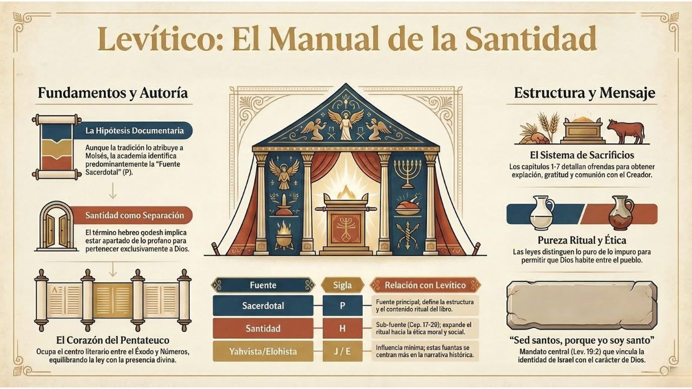

Jesús: El Árbol de la Vida
Levítico es el tercer libro de la Torá (el Pentateuco). Su nombre proviene de la tribu de Leví, de donde surgieron los sacerdotes de Israel. Mientras que Éxodo narra la redención de Egipto y la construcción del Tabernáculo, Levítico explica cómo un pueblo pecador puede vivir en la presencia de un Dios santo.
Para entender Levítico, visualicémoslo como un camino que conduce al corazón del libro: el Día de la Expiación. Es como un árbol donde todas las ramas conducen al tronco central.
Caps. 1-7: Las Ofrendas
Caps. 8-10: El Sacerdocio
Caps. 11-15: Pureza e Impureza
Caps. 17-27: El Código de Santidad
Ley práctica • Ética social
Amor al prójimo

(Toca la imagen para ampliar)
El sacrificio era el medio por el cual se restauraba la relación con Dios. Cada ofrenda tenía un significado específico, apuntando al sacrificio final de Cristo.
| Ofrenda | Propósito | Material Utilizado |
|---|---|---|
| Holocausto | Entrega total y expiación general | Animal sin defecto (quemado totalmente) |
| Cereal | Gratitud y reconocimiento de la provisión | Flor de harina, aceite e incienso |
| Paz/Comunión | Comunión y acción de gracias | Animal; se compartía en una comida |
| Expiación | Perdón por pecados involuntarios | Animal según el estatus del pecador |
| Culpa | Restitución por ofensas | Carnero + compensación económica (20%) |
Los sacerdotes eran los representantes del pueblo ante Dios. Aarón fue el primer Sumo Sacerdote, figura de Cristo nuestro Sumo Sacerdote eterno.
Con una lámina de oro que dice "Santidad a Jehová"
12 piedras preciosas que representan las tribus de Israel
Especie de delantal bordado con hilos de oro
Azul, con campanillas de oro en el borde
Objetos dentro del pectoral para consultar la voluntad divina
Levítico distingue entre lo Santo y lo Profano, y lo Limpio de lo Inmundo. Estas categorías nos enseñan sobre la naturaleza de Dios y nuestra necesidad de purificación.
El Día de la Expiación era el día más sagrado del año. Solo este día el Sumo Sacerdote entraba al Lugar Santísimo.
Su sangre se rocía sobre el Propiciatorio para pagar por el pecado. Representa la satisfacción de la justicia divina.
El sacerdote pone sus manos sobre su cabeza confesando los pecados del pueblo, y el animal es llevado lejos. Simboliza el alejamiento del pecado.
"Tan lejos como está el oriente del occidente, hizo alejar de nosotros nuestros pecados" — Salmo 103:12
La santidad no es solo ritual, es ética y social. Dios exige santidad integral en todas las áreas de la vida.
Israel debía santificar el tiempo a través de un calendario sagrado que recordaba la historia de la redención:
La liberación de Egipto
Salida apresurada
Gratitud por la cosecha
50 días después
Año nuevo (Rosh Hashaná)
Arrepentimiento nacional
El peregrinaje en el desierto
Aunque los sacrificios animales terminaron con la obra de Jesucristo (Hebreos 10), los principios de Levítico siguen vigentes:
El pecado requiere un sacrificio. La sangre de Cristo es el pago final y suficiente.
Dios no puede ser abordado de cualquier manera. Requiere reverencia y temor santo.
La idea de que "otro" toma nuestro lugar. Cristo murió por nosotros.
La adoración debe reflejarse en justicia social y moralidad privada.
"Porque tal sumo sacerdote nos convenía... santo, inocente, sin mancha, apartado de los pecadores"
— Hebreos 7:26